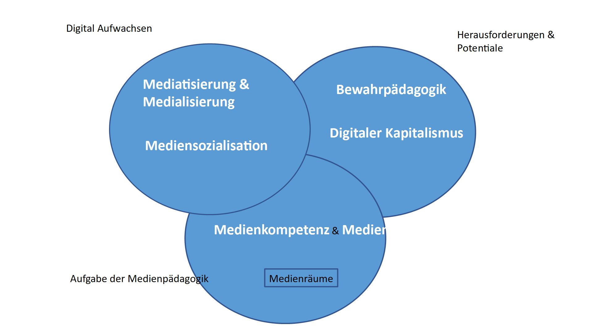

Prüfungsfrage am Beispiel von
Gliederung
- Makro, Meso- und Mikroebene
- Themen und Kompetenzen
- Unterrichts- und Schulentwicklung
Die Eingangshalle des Digitalen Wandels
Wirtschaft Soziales Umwelt Politik
Bildung für nachhaltige Entwicklung
= Bildungsansätze, die sich am Leitbild der Nachhaltigen Entwicklung orientieren.
Bildungsansätze
- Umweltbildung
- Globales Lernen
- Friedens- und Menschenrechtsbildung
- Global Citizenship Education
- Interkulturelle Bildung
Orientierungsrahmen für den Lernbereich Globale Entwicklung
- eine Initiative der Länder, der KMK und des BMZ
- Beteiligung zahlreicher wissenschaftlicher Institutionen und NROs
- basierend auf politischen Entscheidungen zu Nachhaltigkeit

Entscheidende Aspekte
- Makro, Meso- und Mikroebene
- Themen und Kompetenzen
- Unterrichts- und Schulentwicklung